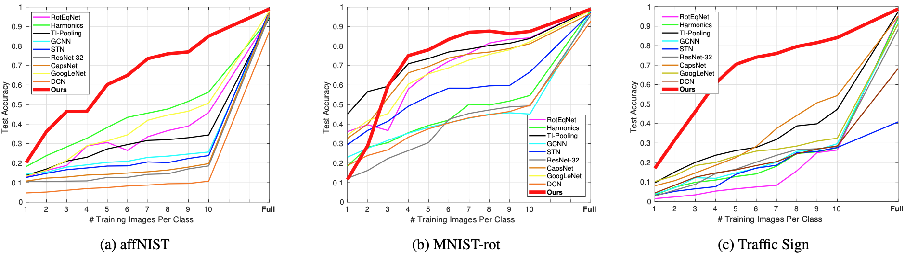
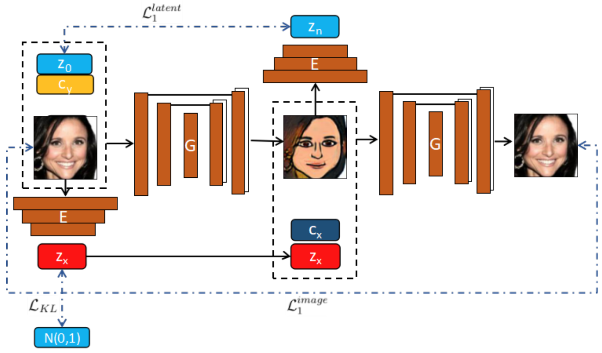
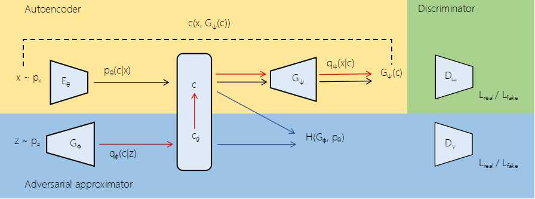

Bio
I am a Staff Research Engineer at OPPO US research Center at Palo Alto, CA. Previously, I worked as a Research Scientist in JD Tech R&D Center
at Silicon Valley. I finished my Ph.D. at the University of Kansas. During my Ph.D. study, I worked at Philips Research and MERL as a research intern in 2018 and 2019, respectively.
My research interest lies in computer vision and deep learning, including image synthesis, object recognition/detection/segmentation, and camera localization. My works have appeared in TOG, TIP, TMM, ICCV, ACM MM. I serve as a reviewer for more than 15 top international journals and conferences.
News
10/15/2021
One paper was accepted to IEEE Transactions on Image Processing (TIP).
07/31/2021
One paper was accepted to SIGGRAPH Asia 2021 and will be published in TOG.
07/22/2021
One paper was accepted to ICCV 2021. (Oral)
07/04/2021
One paper was accepted to ACM MM 2021.
Publications
Monte Carlo Denoising via Auxiliary Feature Guided Self-Attention
ACM Transactions on Graphics (TOG), 40(6), 2021. Proceedings of the ACM SIGGRAPH Conference and Exhibition in Asia (SIGGRAPH Asia), Tokyo, Japan, Dec 14-17, 2021.
Jiaqi Yu, Yongwei Nie, Chengjiang Long, Wenju Xu, Qing Zhang, and Guiqing Li
DRB-GAN: A Dynamic ResBlock Generative Adversarial Network for Artistic Style Transfer
Proceedings of the IEEE International Conference on Computer Vision (ICCV), Montreal, Canada, Oct 11-17, 2021.
Wenju Xu, Chengjiang Long, Ruisheng Wang, and Guanghui Wang
Dual Graph Convolutional Networks with Transformer and Curriculum Learning for Image Captioning
Proceedings of the 29th ACM International Conference on Multimedia (ACM MM), Chengdu, Sichuan, China, Oct 20-24, 2021.
Xinzhi Dong, Chengjiang Long, Wenju Xu, and Chunxia Xiao
A Domain Gap Aware Generative Adversarial Network for Multi-Domain Image Translation
IEEE Transactions on Image Processing, 31, 72-84, 2021
Wenju Xu and Guanghui Wang

Towards Learning Affine-Invariant Representations via Data-Efficient Cnns
Proceedings of the IEEE/CVF Winter Conference on Applications of Computer Vision (ICCV), Snowmass Village, USA, March 1-5, 2020
Wenju Xu, Guanghui Wang, Alan Sullivan, Ziming Zhang
Fx-gan: Self-Supervised Gan Learning via Feature Exchange
Proceedings of the IEEE/CVF Winter Conference on Applications of Computer Vision (ICCV), Snowmass Village, USA, March 1-5, 2020
Rui Huang, Wenju Xu, Teng-Yok Lee, Anoop Cherian, Ye Wang, Tim Marks

Toward Learning a Unified Many-to-Many Mapping for Diverse Image Translation
Pattern Recognition, 93, 570-580, 2019
Wenju Xu, Shawn Keshmiri, and Guanghui Wang

Adversarially Approximated Autoencoder for Image Generation and Manipulation
IEEE Transactions on Multimedia, 21, 2387-2396, 2019
Wenju Xu, Shawn Keshmiri, and Guanghui Wang
Direct Visual-Inertial Odometry with Semi-Dense Mapping
Computers & Electrical Engineering, 67, 761-775, 2018
Wenju Xu, Dongkyu Choi, Guanghui Wang